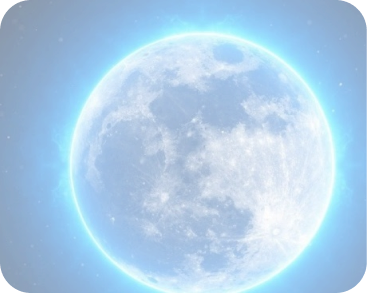
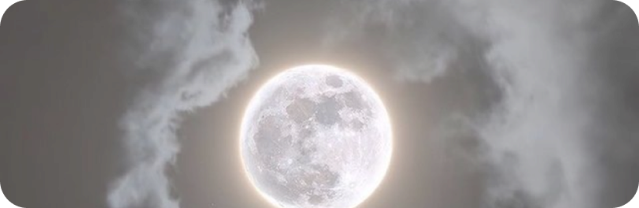
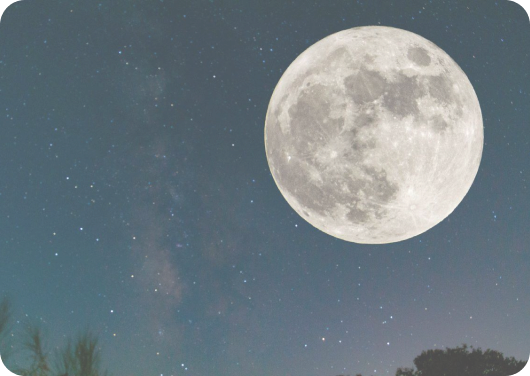

LUA
A Lua é o único satélite natural do planeta Terra. Esse corpo celeste possui um raio de aproximadamente 1740 km, o que o torna a quinta maior lua de todo o Sistema Solar. A massa da Lua é de 7,35 x 1019 toneladas, valor que corresponde a apenas 1,23% da massa terrestre.
CARACTERÍSTICAS
A massa da Lua é de 7,35.1022kg e corresponde, cerca de 1,23% da massa da Terra. Seu diâmetro é de 3 475 km, sendo 3,67 vezes menor que o diâmetro da Terra.
A distância média entre a Lua e a Terra é de 384 400 km. Essa é uma distância muito grande. Para termos uma ideia, poderíamos colocar 30 planetas do tamanho da Terra alinhados entre elas
Estudos mostram que a Lua se afasta 3,78 cm por ano da Terra. Este fato torna os dias na Terra mais longos.
O fato da Lua apresentar uma fina camada de atmosfera, explica essa variação de temperatura. Além disso, a escassa atmosfera não oferece nenhuma proteção aos raios solares.
A falta de uma atmosfera mais espessa, também explica a superfície lunar apresentar inúmeras crateras, resultado dos contínuos impactos com meteoros, cometas e asteroides.
FASES DA LUA
A Lua não tem luz própria, entretanto, conseguimos vê-la brilhante, pois reflete a luz proveniente do Sol. Assim, conforme a sua posição em relação ao Sol e a Terra, a veremos iluminada de diferentes maneiras.
Essas diferentes maneiras são chamadas de fases da Lua. Em função do ângulo de incidência da
luz solar sobre a sua superfície temos quatro fases distintas.
São elas:lua
crescente, nova, minguante e cheia.
ORIGEM
A teoria mais aceita para a origem da Lua aponta que tenha surgido a partir da colisão de um corpo celeste de dimensões semelhantes a Marte com a Terra, há cerca de 4,5 bilhões de anos. Os detritos da explosão seriam os formadores do satélite, que inicialmente apresentavam muito material fundido. Ao longo do tempo, este material foi se cristalizando e formando o satélite que hoje conhecemos.

ESTRUTURA E COMPOSIÇÃO
A Lua é formada por núcleo, crosta e manto. O núcleo é sólido e rico em ferro. Seu raio é de aproximadamente 240 km. O manto, camada intermediária entre o núcleo e a crosta, é formado basicamente por magnésio, ferro, silício e oxigênio. Na crosta lunar encontramos oxigênio, silício, magnésio, ferro, cálcio, alumínio e pequenas quantidades de titânio, urânio, tório, potássio e hidrogênio.
CURIOSIDADES
A sonda soviética Lunik 2 foi o primeiro artefato a aterrissar no solo lunar em 1959. Somente doze homens pisaram até hoje em solo lunar, o primeiro foi Neil Armstrong em 20 de julhode 1969.Ao mapear a superfície da Lua, foi descoberta uma cratera onde a temperatura é de - 238 ºC, essaé a temperatura mais baixa, até agora, encontrada no sistema solar. Existiam na Lua vulcões ativos, entretanto estão adormecidos a milhões de anos.
